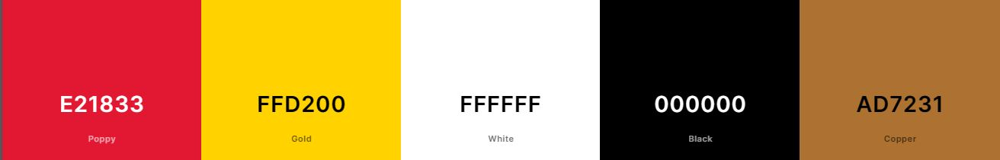

--Design Plan--
Site Name:
The site name will be "Silver Spring Chamber of Commerence". Tis site is about the city of which the chamber is in.
Site Purpose:
The purpose of this site is to inform people of the history of Silver Spring, MD and with inform on what business and events are in Silver Spring.
Scenarios:
- What are some businesses in Silver Spring?
- When was Silver Spring made?
- What are some local events in Silver Spring?
Color Schema:
The red will be used for the header and the yellow for the footer. Brown will be used for some backgrounds for titles and the black will be used for font. White will be used for font and background space.
Typography:
This site will have the google font serif Lora. It will be used for the entire page.